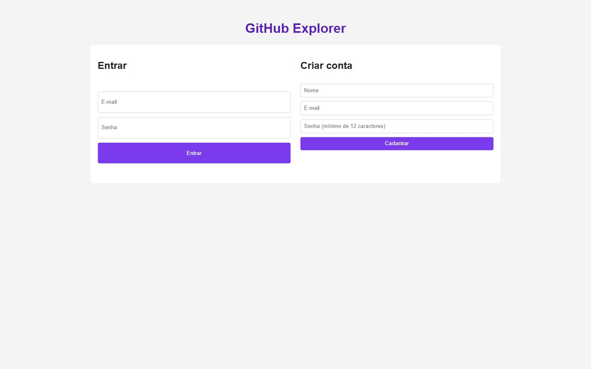
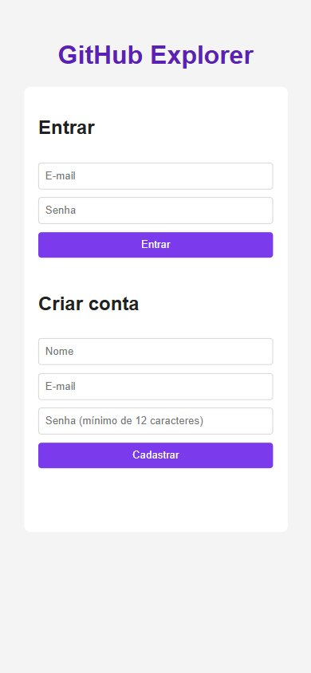
Estudante de Análise e Desenvolvimento de Sistemas, em transição da enfermagem para a tecnologia. Transformo ideias em experiências digitais com código, curiosidade e propósito.
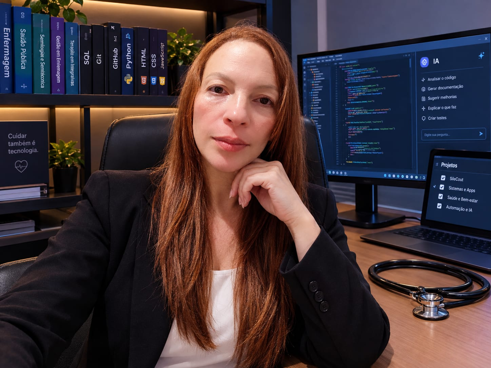
Estudo desenvolvimento web, lógica de programação, Git e GitHub, Salesforce e Inteligência Artificial. Meu objetivo é criar soluções úteis, acessíveis e bem construídas.
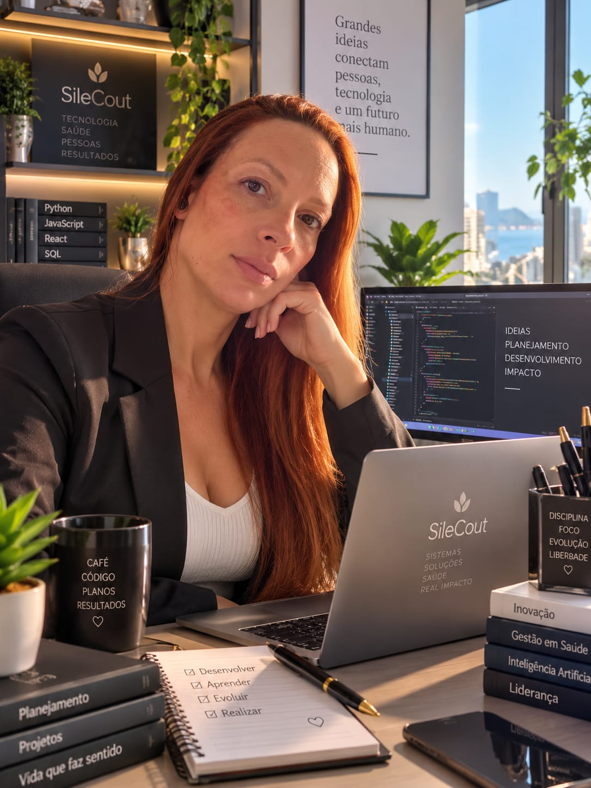
Uma mudança de carreira guiada pela curiosidade, pelo cuidado com as pessoas e pela vontade de criar soluções que façam sentido.
“Uma nova história, construída com propósito.”
Depois de anos atuando como Técnica de Enfermagem, Enfermeira e Terapeuta Holística Integrativa, iniciei uma nova etapa na tecnologia. Essa trajetória fortaleceu habilidades que levo para cada projeto: organização, responsabilidade, tomada de decisão, empatia e trabalho em equipe.
Projetos desenvolvidos para aplicar conceitos de frontend, consumo de APIs, autenticação e experiência do usuário.


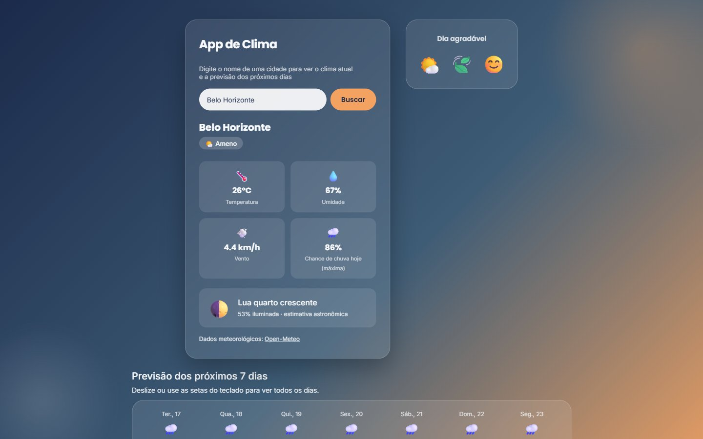
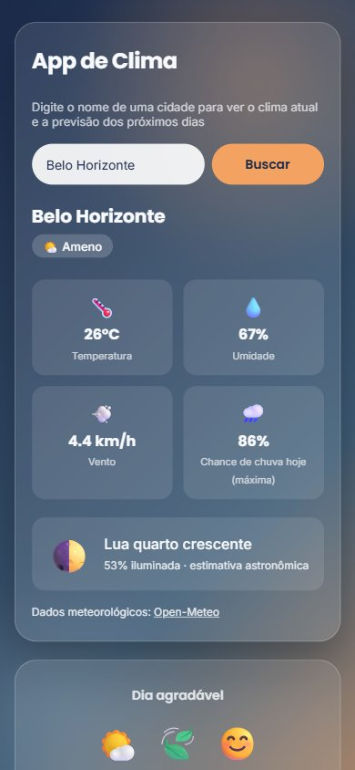
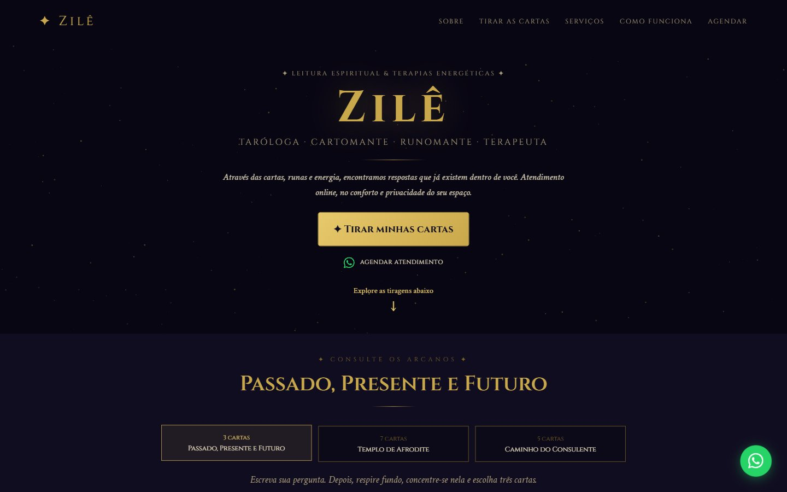
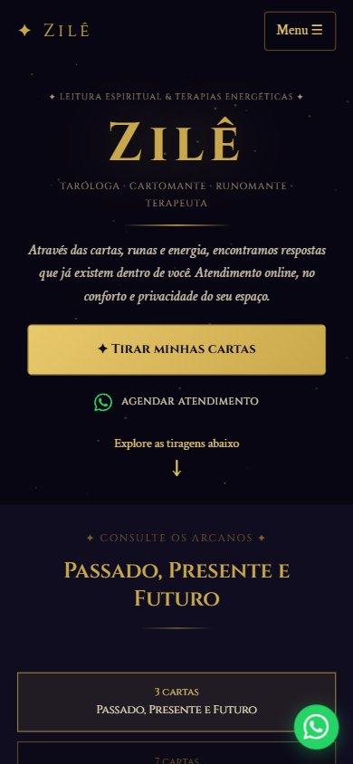
Projetos mais amplos, apresentados como estudos de caso enquanto continuam evoluindo.
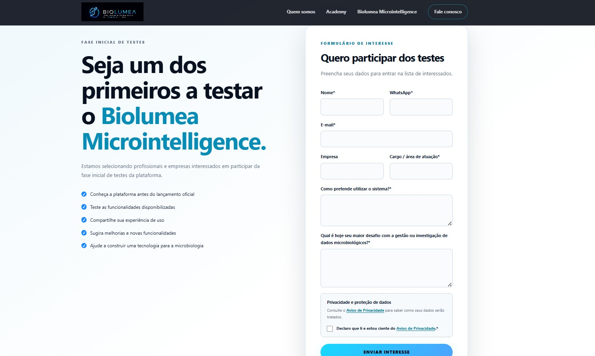
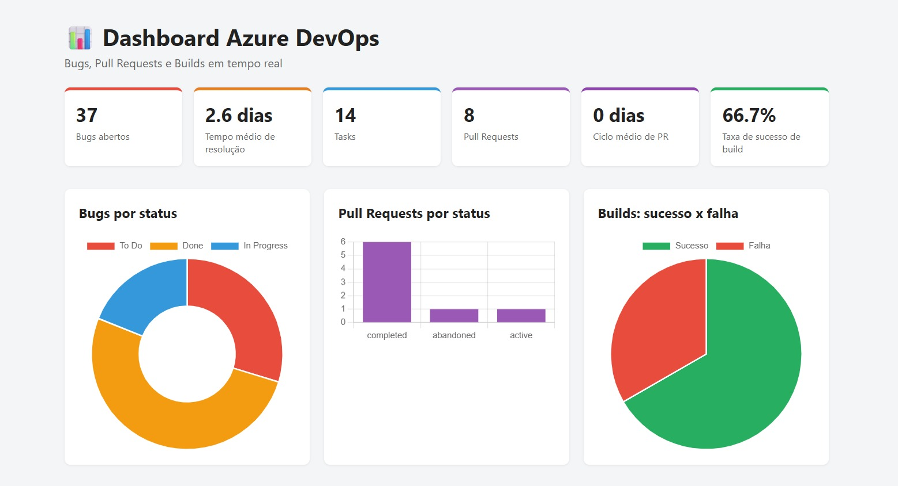
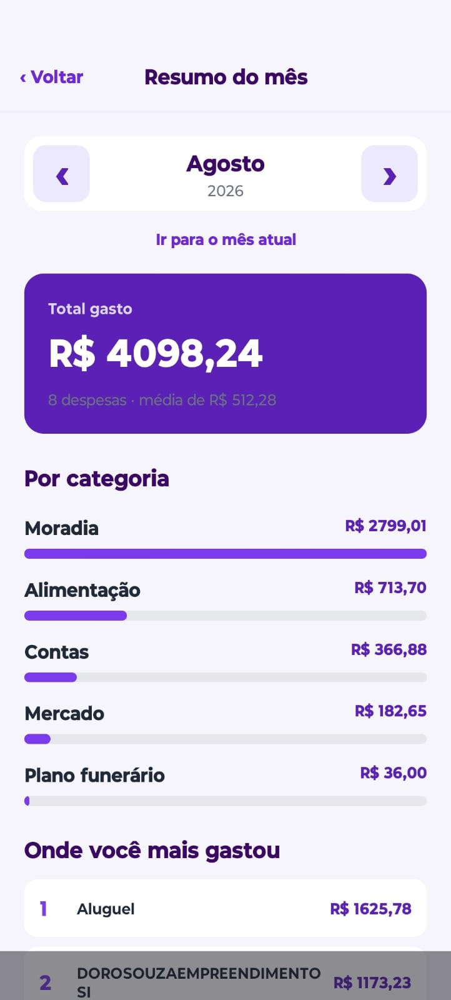
Acompanhe meus projetos, conheça minha trajetória profissional ou entre em contato pelas redes abaixo.
Chamar no WhatsApp